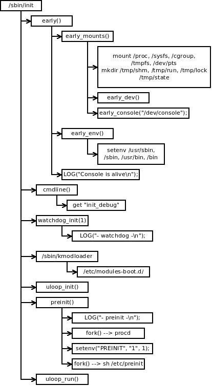

OpenWrt Boot Process (New OpenWrt)
Table of Contents
一个boot log的例子:
[ 2.602573] VFS: Mounted root (squashfs filesystem) readonly on device 31:2.
[ 2.610535] Freeing unused kernel memory: 224K (80428000 - 80460000)
[ 3.912151] init: Console is alive
[ 3.916056] init: - watchdog -
[ 6.994992] init: - preinit -
Press the [f] key and hit [enter] to enter failsafe mode
Press the [1], [2], [3] or [4] key and hit [enter] to select the debug level
Before mount_root
[ 10.352510] jffs2: notice: (401) jffs2_build_xattr_subsystem: complete building xattr subsystem, 0 of xdatum (0 unchecked, 0 orphan) and 0 of xref (0 dead, 0 orphan) found.
[ 10.369525] mount_root: switching to jffs2 overlay
[ 10.540372] procd: - early -
[ 10.543495] procd: - watchdog -
[ 11.303217] procd: - ubus -
[ 12.307928] random: ubusd: uninitialized urandom read (4 bytes read, 53 bits of entropy available)
[ 12.439119] procd: - init -
Please press Enter to activate this console.
Overview
- Boot
- Bootloader 比如U-Boot, 配置底层硬件,加载Linux kernel 和 device tree blob, 最后传入kernel cmdline跳转到Linux kernel image.
- 高通的Secure boot会复杂点,先PBL(Primary Boot Loader), 然后 SBL1(Second BootLoader stage 1) 初始化buses、DDR、clocks等, SBL1 移交运行控制权给QSEE。QSEE建立安全运行环境，配置xPU，支持fuse, 之后才转入APPSBL即为BootLoader, 跳转到HLOS(High LevelOperating System) 即为Linux kernel.
Kernel init Hareware
Linux Kernel 将继续初始化外围硬件.
Kernel -> Filesystem
Mount the root filesystem (通过kernel cmdline中的诸如参数
root=,rootfstype=).Kernel -> Init Process
最后kernel启动
init进程 (PID 1).Run preinit
再procd接管前, preinit会对系统做一些前期的初始工作.
Run procd
一旦preinit完成,它将exec procd. 这将用procd取代原来pid1的init进程. watchdog的file descriptor不会被关闭, 而是传入到procd进程.
OpenWrt系统从第4步开始. 在OpenWrt系统中, 这个init初始化进程不是普通 Linux中一个初始进程, 而是专为OpenWrt写的一个shell脚本.
preinit
/etc/preinit
无论Linux什么版本, OpenWrt都会有类似如下的patch,把OpenWrt的init进程放在地一个位置:
--- a/init/main.c +++ b/init/main.c @@ -963,7 +963,8 @@ static int __ref kernel_init(void *unuse pr_err("Failed to execute %s (error %d). Attempting defaults...\n", execute_command, ret); } - if (!try_to_run_init_process("/sbin/init") || + if (!try_to_run_init_process("/etc/preinit") || + !try_to_run_init_process("/sbin/init") || !try_to_run_init_process("/etc/init") || !try_to_run_init_process("/bin/init") || !try_to_run_init_process("/bin/sh"))
/etc/preinit 如下:
#!/bin/sh # Copyright (C) 2006 OpenWrt.org # Copyright (C) 2010 Vertical Communications [ -z "$PREINIT" ] && exec /sbin/init export PATH=/usr/sbin:/usr/bin:/sbin:/bin pi_ifname= pi_ip=192.168.1.1 pi_broadcast=192.168.1.255 pi_netmask=255.255.255.0 fs_failsafe_ifname= fs_failsafe_ip=192.168.1.1 fs_failsafe_broadcast=192.168.1.255 fs_failsafe_netmask=255.255.255.0 fs_failsafe_wait_timeout=0 pi_suppress_stderr="y" pi_init_suppress_stderr="y" pi_init_path="/usr/sbin:/usr/bin:/sbin:/bin" pi_init_cmd="/sbin/init" . /lib/functions.sh . /lib/functions/preinit.sh . /lib/functions/system.sh boot_hook_init preinit_essential boot_hook_init preinit_main boot_hook_init failsafe boot_hook_init initramfs boot_hook_init preinit_mount_root for pi_source_file in /lib/preinit/*; do . $pi_source_file done boot_run_hook preinit_essential pi_mount_skip_next=false pi_jffs2_mount_success=false pi_failsafe_net_message=false boot_run_hook preinit_main
这里第一行命令是:
[ -z "$PREINIT" ] && exec /sbin/init
PREINIT 还没有define, 所以执行 /sbin/init. 这个程序来自package
procd.
/sbin/init
package procd中 init.c 的main函数基本流程如下:1
